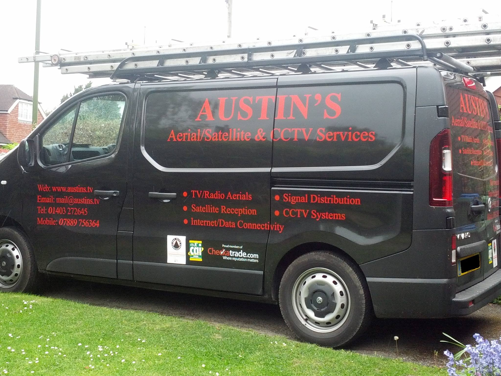

AUSTIN'S - Aerial & Satellite Signal Services, CCTV Services, and Internet Connectivity
At Austin's...
We care about what we do - that being installation and servicing for Television, radio, and satellite signal receiving systems to both domestic and communal properties.
Installations and Services for:
- Terrestrial TV and radio reception
- Digital/Freeview/DAB/FM Satellite TV and radio reception
- Freesat/Sky Signal distribution systems
- Extension TV and Satellite outlets/connections.
- Internet connectivity for TV's/PC's. Telephone outlets/extensions
- Ethernet/Wireless connectivity CCTV services & Installations
Based in Horsham West Sussex covering a general 15 mile radius. Further distances considered upon request.
Business Hours
Monday - Friday: 9:00am - 5:00pm
Saturday - Sunday: Closed
37 Three Acres, Horsham, Horsham, RH12 1RS, West Sussex, United Kingdom
We are proudly affiliated with the Trading Standards Buy with Confidence Scheme:
The "Buy with Confidence Trading Standards" means we are:
- Vetted and approved by Trading Standards
- Committed to operating in a legal, honest and fair way
- Criminal record checked (if going into homes)
- Qualified, experienced, and fully insured
- Monitored to ensure a high level of customer service
- Advised on Trading Standards legislation
Austin's Aerials: Buy with Confidence
We accept Visa and Mastercard Payments:
All payments are processed via mobile network coverage, utilising a POS terminal. We are fully PCI compliant.